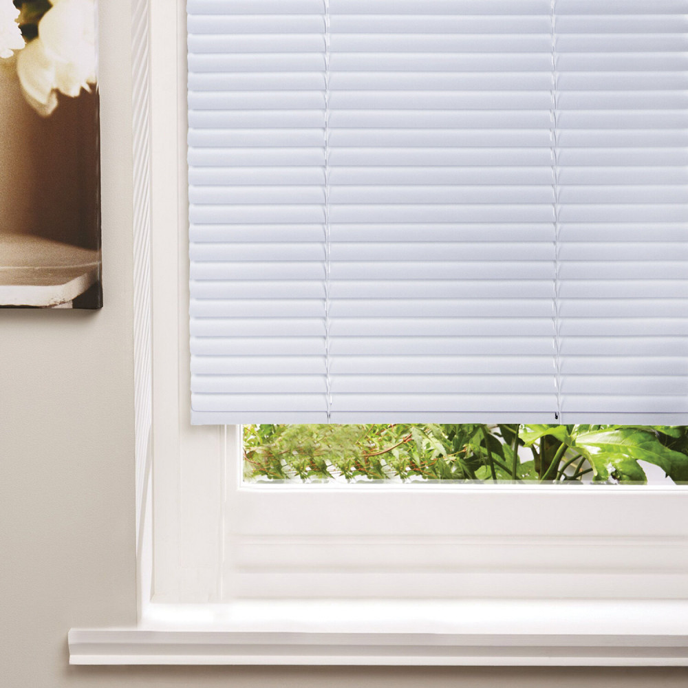

Жалюзи - элемент профессионального интерьера
Главная | День-ночь | Блэкаут | С фотопечатью | Плиссе | Жалюзи | Римские шторы | Шторы | Карнизы
В эпоху, когда функциональность и эстетика определяют облик любого интерьера, роль жалюзи давно вышла за рамки простой защиты от солнца. Сегодня это важнейший элемент дизайна, способный преобразить пространство, придать ему завершенность и создать комфортный микроклимат. Благодаря инновациям в производстве и дизайне, жалюзи стали универсальным выбором как для квартир, так и для офисов, предлагая гибкие инструменты для управления освещением, защиты приватности и оптимизации энергозатрат.
Разнообразие конструкций под любые нужды
Современный рынок изобилует моделями жалюзи, каждая из которых обладает своими особенностями и решает конкретные задачи. Классические горизонтальные модели отличаются простотой настройки светового потока за счет регулировки наклона ламелей. Они идеально вписываются в офисную среду, подчеркивая строгость и деловой стиль. Вертикальные аналоги, напротив, визуально расширяют комнату и эффективно блокируют прямой солнечный свет, поэтому их часто выбирают для просторных залов, переговорных комнат и помещений с панорамным остеклением.

Для ценителей минимализма и элегантности рулонные жалюзи предлагают лаконичное решение. Их полотно, сворачивающееся в рулон, практически незаметно в поднятом состоянии, а в опущенном – создает единую поверхность, гармонично вписывающуюся в любой интерьер. Римские шторы сочетают в себе функциональность жалюзи и изысканность штор, образуя элегантные складки при подъеме. Они добавляют помещению уют и изысканность, прекрасно дополняя классические и современные интерьеры. Также существуют специализированные решения, такие как плиссе и жалюзи для мансардных окон, разработанные для окон нестандартной формы и обеспечивающие максимальную эффективность в сложных условиях.
Основа долговечности и стиля
Выбор материала для жалюзи играет первостепенную роль, определяя их долговечность, внешний вид и эксплуатационные свойства. Деревянные и бамбуковые жалюзи придают интерьеру статусность и теплоту натуральных материалов, идеально сочетаясь с классическими и эко-интерьерами. Их природная текстура и благородный вид способны преобразить любое помещение. Альтернативой дереву выступают жалюзи из эко-материалов (например, полимера), которые имитируют натуральную древесину, но обладают повышенной влагостойкостью и простотой в уходе, что делает их практичным выбором для кухонь и ванных комнат.
Алюминиевые жалюзи отличаются легкостью, прочностью и устойчивостью к коррозии. Благодаря широкой палитре цветов и текстур, они могут быть адаптированы к любому дизайнерскому решению, от строгого офисного стиля до ярких современных интерьеров. Тканевые жалюзи, представленные в виде рулонных штор или римских моделей, позволяют создавать мягкие световые эффекты и добавлять акценты в интерьер. Разнообразие фактур и расцветок тканей открывает безграничные возможности для воплощения самых смелых дизайнерских идей.
Больше, чем просто защита
Помимо эстетической привлекательности, жалюзи выполняют ряд критически важных функциональных задач. Эффективное управление светом является их основным преимуществом. Возможность точно регулировать интенсивность и направление солнечного света позволяет создавать комфортную рабочую атмосферу, предотвращать выгорание мебели и текстиля, а также защищать технику от бликов. Обеспечение приватности является еще одним ключевым аспектом. Жалюзи позволяют контролировать степень открытости окна, гарантируя уединение в любое время суток.
Важным, но часто упускаемым из виду преимуществом является энергоэффективность. Правильно подобранные жалюзи способны снизить теплопотери зимой и уменьшить нагрев помещения летом, что приводит к сокращению расходов на отопление и кондиционирование. Кроме того, плотные материалы жалюзи могут способствовать снижению уровня шума, проникающего с улицы, создавая более спокойную и комфортную обстановку. Интеграция жалюзи в общую концепцию интерьера позволяет не только улучшить его функциональность, но и повысить общую привлекательность и стоимость объекта недвижимости.